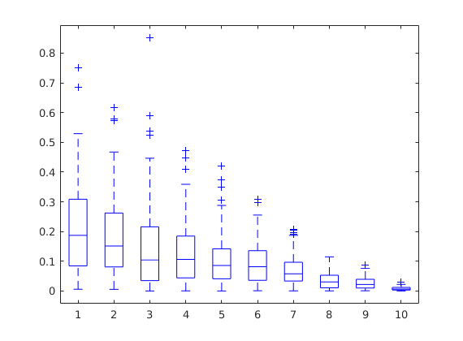
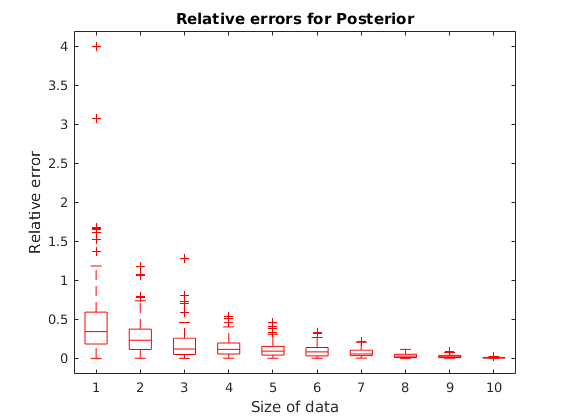
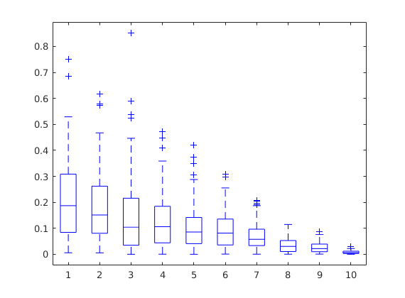
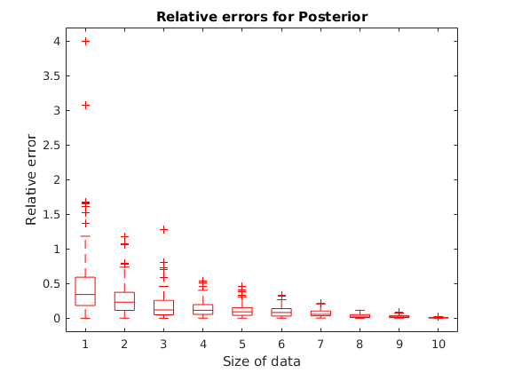

Contents
Initialize variables
clear; clc; close all;
rng(1);
N_list = [5, 10, 20, 40, 60, 80, 100, 500, 1000, 10000];
M = 100;
alpha = 5.5;
beta = 1;
true_lambda = 5;
err_MLE = zeros(M,length(N_list));
err_Post = zeros(M,length(N_list));
Loop through the input
for iter = 1:length(N_list) N = N_list(iter); for i = 1:M
Draw data samples
X = -(log(rand(N, 1)) * 0.2);
Calculate the estimate of lambda using MLE
For lambda, the MLE is derived in the report
ml_estimate = N / sum(X);
Calculate the estimate of lambda using Posterior
For a Gamma prior, the posterior mean is derived in the report.
posterior_estimate = (alpha + N)/(beta + sum(X));
Update errors in the matrices
err1 = abs(ml_estimate - true_lambda)/true_lambda;
err2 = abs(posterior_estimate - true_lambda)/true_lambda;
err_MLE(i, iter) = err1;
err_Post(i, iter) = err2;
end end
Plot the data!
figure(1); boxplot(err_MLE, 'COLOR', 'r', 'Symbol', 'r+'); hold on; boxplot(err_Post, 'COLOR', 'b', 'Symbol', 'b+'); hold on; xlabel('Size of data'); ylabel('Relative error'); title('Comparison between relative errors'); hold off; figure(2); boxplot(err_MLE, 'COLOR', 'r', 'Symbol', 'r+'); hold on; xlabel('Size of data'); ylabel('Relative error'); title('Relative errors for MLE'); hold off; figure(3); boxplot(err_Post, 'COLOR', 'b', 'Symbol', 'b+'); hold on; xlabel('Size of data'); ylabel( 'Relative error' ); title('Relative errors for Posterior'); hold off;
  
 